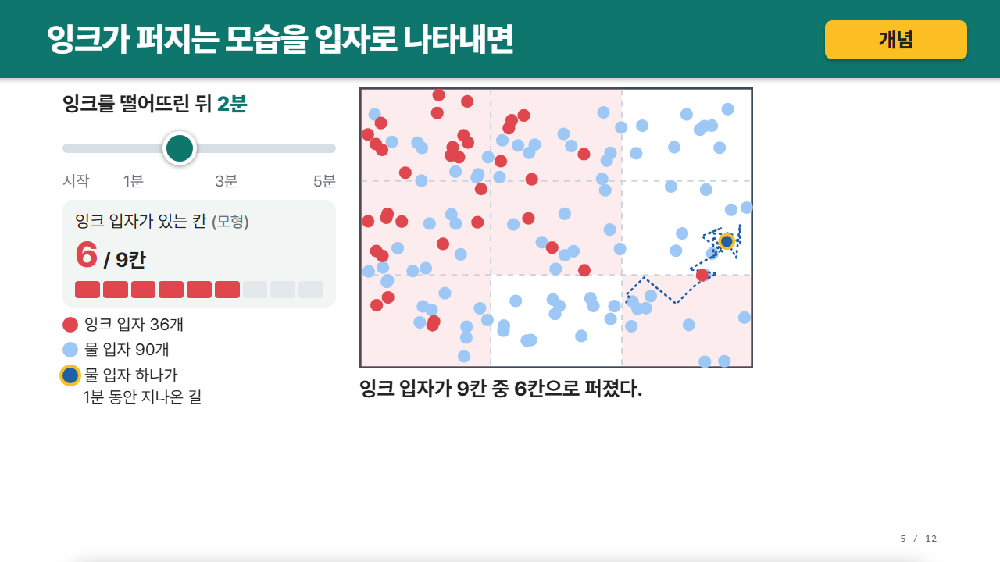

같은 장, 두 모습
실습 PPT '확산' 5쪽을 바꾸면


PPT수업 HTML- 그림 3장 → 시간 막대처음·1분·5분 사이도 학생이 직접 돌려 봐요.
- 몇 칸에 퍼졌나9칸 중 몇 칸에 잉크가 있는지 세어 줘요.
- 입자 하나의 길물 입자도 움직인다는 것을 점선으로 보여 줘요.
2026. 10. 13. · 교직원 연수
수업 PPT를 학생이 직접 만지는 수업 HTML로 바꾸는 이야기와 실습이에요.
오늘 90분설명 40 · 실습 45 · 마무리 5
N-LIFESCIENCE · GITHUB.COM/N-LIFESCIENCE/CLASS-HTML
지금까지 한눈에
10. 2. 저장소를 열고
10. 8.까지
v1.0.0(10. 5.),
v1.1.0(10. 6.)
생명 5차시 72장,
윤리 19장, 세계사 20장
단계 막대부터
입자 상자까지
판서가 되고, 학생이 만질 수 있고, 내 AI로 만들 수 있는 수업 화면.
오늘은 이 셋을 직접 해 봐요.
여는 질문
손을 든 사람 수를 적으면 막대가 바로 바뀌어요.
처음 해 본 일
펜 동작, 화면 틀, 활동 수준이 AI마다 달랐어요. 그래서 바뀌면 안 되는 것을 엔진에 맡기기로 했어요.
그래서 만든 것
펜을 든 채로 넘기기, 칠판, 반별 판서 저장, 인쇄, 넘친 글자 자동 점검을 맡아요.
단계 막대, 분류 카드, 보기마다 이유가 나오는 문제, 계산 상자, 그래프, 입자 상자 등 12종이에요.
먼저 묻고, 설계표를 보여 주고, 개념마다 학생이 만지는 도해를 하나씩 넣게 해요.
같은 장, 두 모습

PPT수업 HTML잉크를 떨어뜨린 뒤 시작
? / 9칸
가격 시작
수요량(사려는 양)
공급량(팔려는 양)
먼저 상황을 골라요.
선로 위 사람 5명
정서 반응 세기 보통
내 교과라면
ol.order사건 순서 맞히기소설의 사건을 차례로 쌓으면 자리마다 채점하고 이유가 붙어요.
.sort인물 성격과 근거대사 카드를 '성격'별 칸으로 끌어 나눠요.
.reveal시 한 행씩행을 하나씩 열며 앞 행에 판서해 둔 것을 이어 가요.
.calc + figure.plot계수를 바꾸는 그래프a, b를 밀면 함수 그래프와 꼭짓점이 바로 바뀌어요.
$ 수식 $수식 그대로KaTeX로 수식을 그려요. 판서와 함께 써요.
.quiz보기마다 이유틀린 보기를 고르면 어디서 틀렸는지 알려 줘요.
ol.order문장 배열단락의 문장을 순서대로 놓으면 연결어가 근거로 나와요.
.blank빈칸 열기본문 빈칸을 하나씩 눌러 열며 함께 읽어요.
.switch두 표현 비교단추로 같은 뜻의 두 문장을 번갈아 보여 줘요.
figure.map-reveal시기별 지도영토 변화를 한 시기씩 열고 새 땅에 테두리를 켜요.
ol.yearline연표 막대연도에 비례한 축 위에서 사건을 하나씩 짚어요.
.calc판정 모형나이·성별·연도를 넣으면 선거권이 있었는지 계산해요.
figure.particles입자 상자확산과 삼투를 입자 개수로 보여 줘요. 막도 넣을 수 있어요.
.calc + figure.plot변인 조절온도·농도를 바꾸면 결과 수치와 그래프가 함께 바뀌어요.
.reveal실험 단계과정을 한 단계씩 열고 주의할 점을 붙여요.
.reveal알고리즘 한 단계씩정렬·탐색의 각 단계를 막대로 돌려 봐요.
.timer · .picker교실 도구모둠 활동 타이머, 겹치지 않는 발표자 뽑기를 써요.
.score모둠 점수판체육·음악 활동에서 모둠별 점수를 바로 올려요.
지금 해 보세요
펜을 든 채로 되는 것
넘기기 ◀ ▶, 활동 단추와 보기,
슬라이더, 카드 끌기
단추 위에서 톡 누르면 단추,
쭉 끌면 판서가 돼요.
반마다 따로
툴바의 칠판(또는 C 키)을 누르면 빈 칠판이 열려요.
흰색·모눈·줄·초록 칠판·좌표평면 바탕에 여러 장을 쓸 수 있어요.
같은 자리 단추가 슬라이드로 바뀌고, 누르면 보던 장으로 돌아와요.
반 메뉴에서 「2반」을 추가하고 골라 보세요. 판서가 비어 있어요.
「기본」으로 돌아가면 아까 쓴 판서가 다시 나와요.
반 목록은 이 PC의 모든 수업 HTML이 함께 써요.
학교 PC가 재부팅 때 저장소를 지운다면
반 메뉴의 「판서 백업 파일로 저장」으로 파일을 받아 두고,
다음 시간에 「백업 파일 불러오기」를 눌러요.
외우지 않아도 돼요 · ? 키로 언제든
프레젠터 리모컨의 넘기기 단추도 그대로 돼요.
AI에게 다시 부탁하지 않아도
위에 편집 막대가 나와요.
글·상자·그림·SVG 도형 무엇이든 골라요.
두 번 누르면 글을 고치고, 모서리를 끌면 크기가 바뀌어요.
고친 파일을 새로 받아요(Ctrl+S).
해 보기: 지금 이 장의 제목을 "편집 모드, 생각보다 쉬워요"로 바꿔 보세요.
「편집 끝내기」를 누르면 수업 화면으로 돌아와요내 AI가 하는 일
내 AI에 PPT를 올리고 한 줄을 붙여요.
교과·차시, 수업 장면, 헷갈리는 곳, 넣을 활동, 지킬 것.
채팅에서만 확인해요. 학생 화면에는 안 들어가요.
판서·저장·점검은 엔진이 맡아요.
넘친 글자를 찾고, 편집이나 AI 부탁으로 고쳐요.
"알아서 해 줘"라고 답하면 AI가 추천대로 만들어요.
해도 되는 것을 모두 고르세요.
시작 전 2분
AI에 PPT와 함께 붙여 넣을 한 줄
https://github.com/N-lifescience/class-html
지침대로 이 PPT를 수업 HTML로 바꿔줘PPT가 없다면 실습 PPT로 해요
답이 끊기면 "계속"이라고 써요.
안 되면 PDF로 바꿔 올려요.
아래 「합본 지침 받기」
"전체 HTML을 코드 블록 하나로"라고 부탁해요.
스킬을 등록했다면 "수업 HTML로 바꿔줘"만.
설계표를 확인해요.
받은 파일은 더블클릭하면 바로 열려요.
5쪽은 글이 많아. 두 장으로 나눠 줘.
7쪽 그래프에 단위를 넣고, 농도 슬라이더 범위를 0~10으로 해 줘.
자동 점검에 나온 오류를 모두 고쳐 줘.
손을 들기 전에
어떻게 자라고 있을까요
펜을 든 채로 넘기기, 반별 판서 저장.
단계 막대, 분류, 계산 상자. AI가 읽을 지침.
누구나 주소 한 줄로 쓸 수 있게.
v1.1.0. 값을 바꾸면 그림이 바뀌는 수업, 바로 고치기.
양옆 도구, 손등 지우개. 지금 시험 중이에요.
10월 18일 이후에 정식으로 소개해요.
공모전이 마감되는 10월 18일이 지나면 이 자리에서 정식으로 소개할게요.
마무리 3분
적은 내용은 이 PC 브라우저에만 남아요.
오늘 바꾼 것 하나를 다음 수업에
PPT는 보여 주는 도구,
수업 HTML은 함께 만지는 도구예요.
GITHUB.COM/N-LIFESCIENCE/CLASS-HTML · MIT